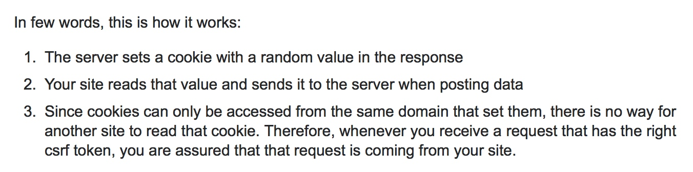

Django问题集锦
Csrf验证
需要在表单中加入`csrfmiddlewaretoken`或者在http头中`X-CSRFToken`请求头，具体值来自cookie当中的`csrftoken`Django允许跨域
安装
django-cors-headerspip install django-cors-headers在setting.py中增加如下代码
INSTALLED_APPS = [ ...
'corsheaders'，
...
]
MIDDLEWARE_CLASSES = (
...
'corsheaders.middleware.CorsMiddleware',
'django.middleware.common.CommonMiddleware', # 注意顺序
...
)
#跨域增加忽略
CORS_ALLOW_CREDENTIALS = True
CORS_ORIGIN_ALLOW_ALL = True
CORS_ORIGIN_WHITELIST = (
'*'
)
CORS_ALLOW_METHODS = (
'DELETE',
'GET',
'OPTIONS',
'PATCH',
'POST',
'PUT',
'VIEW',
)
CORS_ALLOW_HEADERS = (
'XMLHttpRequest',
'X_FILENAME',
'accept-encoding',
'authorization',
'content-type',
'dnt',
'origin',
'user-agent',
'x-csrftoken',
'x-requested-with',
'Pragma',
)axios 默认支持csrf功能，需要修改其属性和服务器返回的csrfcookiename一致
#Django返回的cookie中的csrf字段名字为csrftoken,会从request的header中读取X-CSRFTOKEN来校验csrf axios.defaults.xsrfHeaderName = "X-CSRFTOKEN";
axios.defaults.xsrfCookieName = "csrftoken";如果axios要访问的接口和前端页面属于跨域状态，那么axios无法读取xsrfCookie,则也无法设置xsrfHeader,此时则需要后端将csrftoken放入response中而不是cookie当中，axios在request阻截器中手动设置xsrfHeader

Django使用django-rest-framework 单独某个view取消csrf验证
需要两步：
- 关掉django的csrf验证,利用
@csrf_exempt(针对function view)，或者用@method_decorator(csrf_exempt, name="dispatch")(针对class view) - 关掉drf框架的验证，在class view 中将
authentication_classes设置为BasicAuthentication
@method_decorator(csrf_exempt, name="dispatch") class login(views.APIView):
authentication_classes = (BasicAuthentication,)
def post(self, request, *args, **kwargs):
username = request.data.get("username")
password = request.data.get("password")
user = auth.authenticate(request, username=username, password=password)
if user is not None:
auth.login(request, user)
return ErosResponse()
else:
return ErosResponse(status=ErosResponseStatus.INVALID_USER)- 关掉django的csrf验证,利用
使用
OrderFilter过程中遇到OrderingFilter object has no attribute 'filter_queryset':需要使用从rest_framework.filters中导入的OrderingFilter，而不是django_filters
from django_filters.rest_framework import DjangoFilterBackend from rest_framework.filters import OrderingFilterDjango链接Mysql 8.0 出现错误(1045:Access denied for user 'root'@'localhost' (using password: NO) 的一种解决方法
出现此错误的原因是MySQL8.0 密码的加密方式发生了改变，采用了cha2加密方法，我们可以利用下面的语句将MySQL的密码加密方式修改为之前的版本
mysql -u root -p use mysql；
ALTER USER 'root'@'localhost' IDENTIFIED WITH mysql_native_password BY 'newpassword';
FLUSH PRIVILEGES;Django-Filter自定义查询过滤字段
from django_filters import FilterSet from django_filters import CharFilter
class TagFilter(FilterSet):
##自定义search字段
search = CharFilter(name="name", lookup_expr="contains")
class Meta:
model = Tag
fields = {
'id': ['exact'],
'name': ['exact', 'contains'],
'search': ['exact'],
}具体Django-Filter的用法可以参考文档
DRF的OrderingFilter默认排序
filter_backends = (DjangoFilterBackend, OrderingFilter) ordering_fields = ('id', 'hot')
ordering = ('-hot',)Django runserver指定setting配置
python3 manage.py runserver 0.0.0.0:8000 --settings=OrionGraphQL.settings.dev

Copyright © 2015 Powered by MWeb, Theme used GitHub CSS.